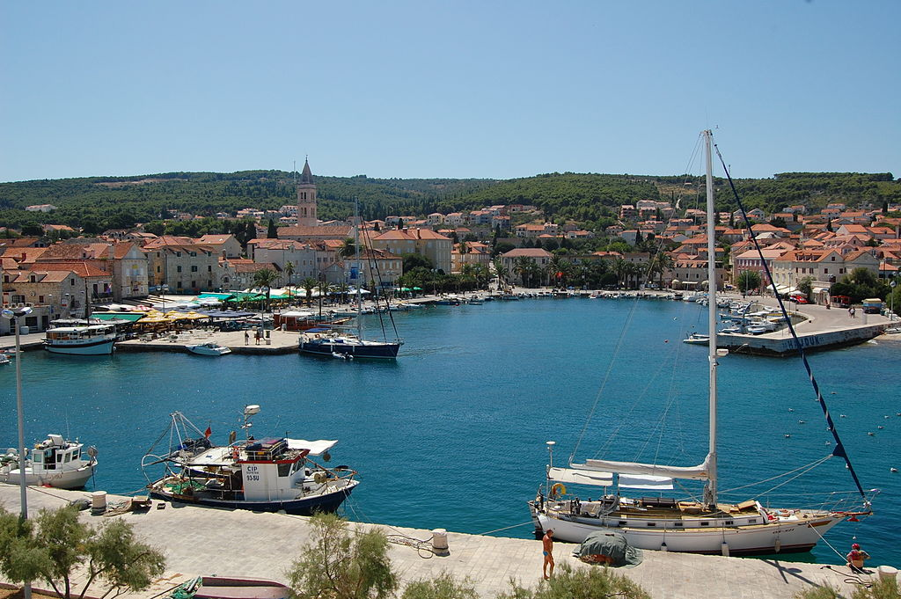
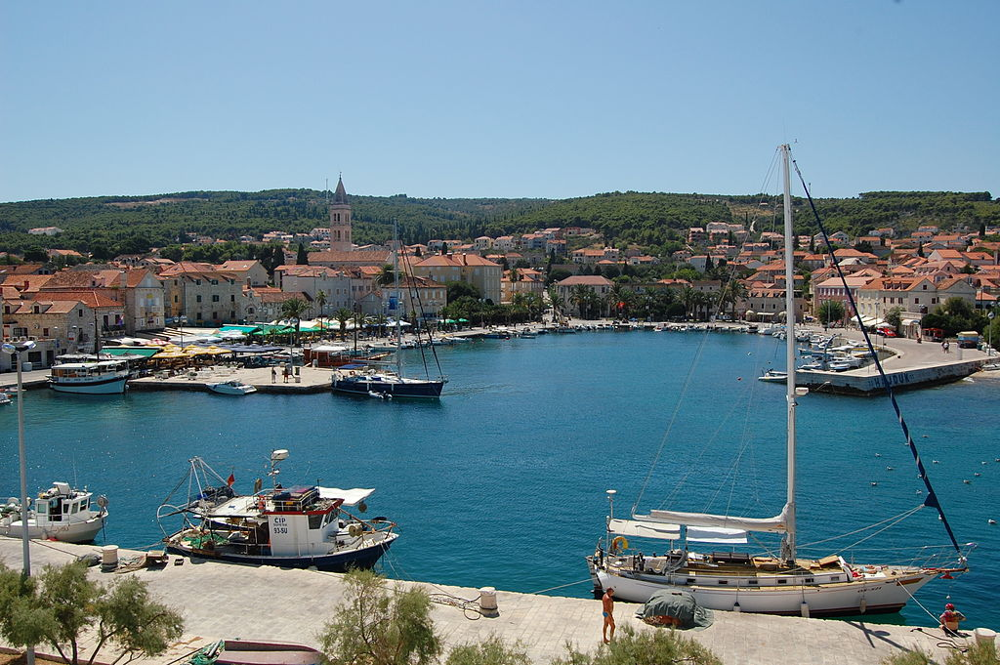

Pučišća
Pučišća su malo mjesto na sjeveru otoka Brača i smjestila su se oko duboke uvale zatvorenog tipa, to je jedan od zanimljivijih ekosustava na otoku Braču baš radi te uvale koja je zatvorena. Općina pučišća i samo mjesto Pučišća poznati su po svojim kamenolomima. Sam čin vađenja kamena je devastacija prirodno nastalog reljefa, ali tome ćemo progledati kroz prste jer to je ipak dio višetoljetne tradicije za koju se smatra da je materijalno dobro toga područja. Ekološki problemi Pučišća su sljedeći:
-
1. Brojna ilegalna odlagalista krupnog otpada oko kamenoloma i na nekim zabačenim mjestima u netaknutoj prirodi. Rezultat toga je uništavanje reljefa, zagađenje tla koje kasnije ima posljedice u poljoprivredi koja je takoder bitna za Brač, narušavanje ekosustava i bioraznolikosti, a uzrok svemu tome je običan nemar stanovništva koje nije svjesno posljedica.
-
2.Bacanje velikih blokova kamena u more kroz godine je narušilo morski ekosustav Pučišća na način da je promijenilo smjerove tokova morskih struja u uvali te tako uzrokovalo povećano zagađenje mora i obale.
-
3. Brodski je turizam veliki ekološki problem za brojne manje uvale koje privlače različite vrste brodova svojom ljepotom i posebnostima, ali zbog neukih vlasnika nekih brodova privlače i opasnosti. Mnogi vlasnici i posada turističkih i privatnih brodova imaju vrlo česti običaj da u uvali operu svoje brodove, jahte, jedrilice itd. sa što jeftinijim sapunima i deterđentima koji izuzetno štete zatvorenom tipu ekosustava ove uvale na način da te kemikalije i prljavština zbog narušenih morskih strujanja ostaje u uvali i narušava biodiverzitet i zagađuje obalu.
Jos jedan problem sa brodskim turizmom je nažalost također vrlo česti slučaj praznjena brodskih spremnika s fekalijama unutar zabranjene zone odnosno vrlo blizu uvali, a nekad i u samoj uvali. Kakve to posljedice za okoliš i razvoj ekoturizma ima nećemo niti govoriti, nego ćemo na ovaj način upozoriti lokalne samoupravne jedinice na ovaj problem.
 

Bol
Bol je najstarije bracko obalno naselje i nalazi se na jugu i otvoreno je prema moru, nema nikakvu prirodnu i veću uvalu. ali je takoder izlozeno velikim ekoloskim problemima koji ugrozavaju njegovu prirodnost i prirodne posebnosti. Ti problemi su
-
1. Agresivna gradnja apartmana i divlja gradnja ostalih turistickih objekata bez ekoloskih dozvola ima jako negativan utjecaj na bolski ekosustav, provodi se devastacija reljefa, zagadenje tla i zagadenje podzemnih voda.
-
2. Masovni turizam tokom ljetne sezone je ovdje najveci problem za ekosustave Bola, to je premali prostor za toliki broj ljudi koji nemaro zagaduju okolis i prirodu, previse apartmana i previse hotela narusava prirodne ljepote zbog kojih je bol u pocetku postao atrakcija. Nazalost, zakon se slabo provodi te se priroda svakog ljeta sve vise narusava.
Supetar
Supetar je jedino naselje na otoku bracu sa statusom grada što mu daje novi nivo ekoloske odgovornosti i svijesti. Smjesten je na sjevernom dijelu braca i ima relativno manju bioraznolikost kao grad u usporedbi s ostalim brackim naseljima. Ima prirodnu uvalu ali vrlo otvorenu pa morska bioraznolikost nije velika. Turizam je ovdje takoder veliki uzrok ekoloskih problema, a to su:
-
1. Trajektna linija, po najnovijim istrazivanjima oko 20 najvecih tankera u svijetu zagaduje okolis koliko i svi auti na planeti zemlji, naravno trajekti “Biokov”, “hrvat” i “juraj dalmatinac” nisu ti veliki brodovi ali kad se to sve stavi u omjer dobije se podatak da trajekti u supetru zagaduju zrak supetra koliko i svi auti splita.
-
2. Veliki zagadivac grada supetra je njihovo vlastito odlagaliste otpada koje se nalazi na poroznom tlu te svakom sljedecom kisom plaze i podrucja podno deponija budu zagadeni sve vise, a rijesenje se nikako ne priblizava. Osim mora i tla koji su zagadeni zbog toga deponij je uzrok i velikog zagadenja zraka
-
3. Apartmanizacija je takoder jedan od problema, grad supetar svake godine ima sve manji broj zelenih povrsina sto takoder utjece na cistocu zraka.
Postira
Postira su naselje koje se smjestilo na sjevernoj stani otoka braca, na to naselje turizam nije toliko utjecao negativno koliko industrija, ima malu i otvorenu uvalu. Najveci ekoloski problemi ovdje su:
-
1. Industrija “Sardina” je dugo zagađivala tlo i more postira ali srecom je sagrađeno novo i modernizirano postrojenje pa se utjecaj te industrije na okolis od tad znatno smanjio.
-
2. Jos jedanproblem takoder vezan za industriju u postirama je stalna opasnost o prevelikog izlova ribe unutar postirskom akvatoriju a i izvan njega.
Plaže i podmorje Brača Plaže na Braču su odraz ljepote i raskoši našeg otoka. Najpoznatija plaža je Zlatni rat u Bolu koja je i najveća atrakcija otoka, ali nažalost najveći je problem onečišćenje plaža i mora.

U nekim mjestima se pokreću akcije za čišćenje podmorja i plaža i podosta se očisti ali svake godine je nažalost sve više i više smeća. Od smeća se pod morem pronađu gume, komadi metala i plastika. Kod čišćenja plaža se pronađu igle , vrećice , plastične boce itd. Jedan od problema kod onečišćivanja mora je ispuštanje kemijskih sredstava iz kućanstava i tvornica u more i to uzrokuje ugibanje riba zbog čega stradava naše ribarstvo koje je ujedno i jedan od najunosniji poslova na našem otoku. Plastične vrećice u moru uzrokuju to da se neke životinje zapetljaju i uguše. Za razgradnju plastike treba 500 godina! Najsramotniji je prikaz kad se ribari vraćaju praznih mreža zbog ljudske nemari. Najveći zagađivači na plažama su kafići koji prodaju sladolede i plastične čaše jer se to baca na plaže i tako se zagađuju plaže našeg otoka.